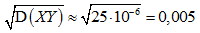

At the power plant, rectangles that are 2 m long and 1 m wide are produced. The length of the objects is measured by the worker Howard, and the width, irrespective of Howard, is measured by the worker Rachel. The average error is zero for both, but Howard allows a standard measurement error $($standard deviation of length$)$ of 3 mm, and Rachel allows a standard error of 2 mm.
a) Find the mathematical expectation of the area of the resulting rectangle.
b) Find the standard deviation of the area of the resulting rectangle in centimetres squared.
a) Let X be the width, and Y the length of the cut rectangle in meters. By the condition EX = 2, EY = 1. Since the measurements are independent, E$($XY$)$ = $EX \times EY$ = 2 $(m^2)$.
b) It follows from the condition that DX = $0.003^2$ = $9 \times 10^{-6}$ and DY = $4 \times 10^{-6}$. D$($XY$)$ = E$(XY)^2$ – $E^2 (XY)$ = $EX^2 \times EY^2$ - 4.
From the equality DX = $EX^2 – E^2X$ we express $EX^2$ and substitute it into the expression obtained. Similarly, we do the same with $EY^2$: D$($XY$)$ = $(DX + E^2X) (DY + E^2Y) – 4$ = $(4 \times 10^{-6} + 1) (9 \times 10^{-6} + 4) – 4$ = $36 \times 10^{-12} + 25 \times 10^{-6}$.
In comparison with the second term, the former is so small that it can be discarded. We get:  $(m^2)$, which gives 50 $cm^2$.
a) 2 $m^2$; b) ≈50 $cm^2$.